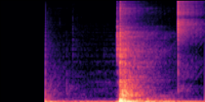
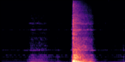
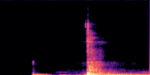
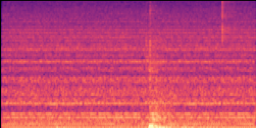
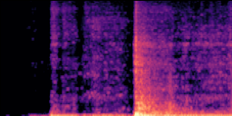
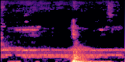

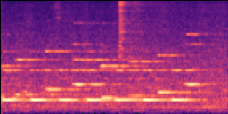
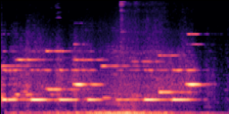
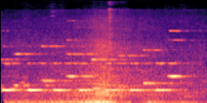
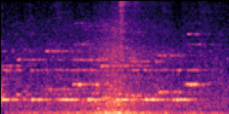
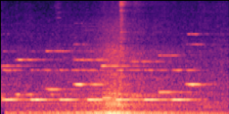
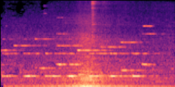
Code, result files, the listening-test package and model checkpoints: github.com/LemonT25/asg-companion (code/); the checkpoints are release assets of that repository.
Back to the main page. Mixture = the original recording. Reference = the closed-form ground truth. Separation-family systems (AudioSep, FlowSep, SoloAudio, OmniSep) receive the same estimation heads, inverses and edit identities as ours; instruction systems (ZETA, Audio-Omni) receive a text instruction (one combined instruction for chains).
| scene | Mixture | Reference | Ours | AudioSep | FlowSep | SoloAudio | OmniSep | ZETA | Audio-Omni |
|---|---|---|---|---|---|---|---|---|---|
| Scene: engine (static), door (static); room absorption 0.30. Edit: remove the engine. | |  |  |  |  |  |  | n/a | n/a |
| Scene: engine (pass-by 14.9 m/s), alarm (static); open air. Edit: remove the engine. | |  |  |  |  |  |  | n/a | n/a |
| scene | Mixture | Reference | Ours | AudioSep | FlowSep | SoloAudio | OmniSep | ZETA | Audio-Omni |
|---|---|---|---|---|---|---|---|---|---|
| Scene: engine (pass-by 31.8 m/s); open air. Edit: engine passes by at 5 m/s instead of 31.8 m/s. | 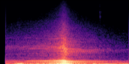 | 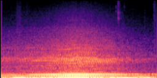 | 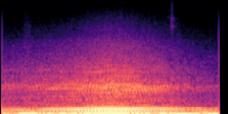 | 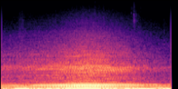 | n/a | n/a | |||
| Scene: engine (pass-by 5.9 m/s); open air. Edit: engine passes by at 20 m/s instead of 5.9 m/s. | 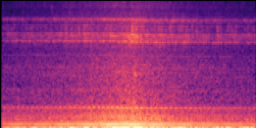 | 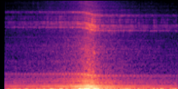 | 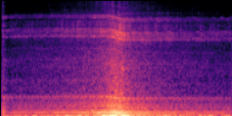 | 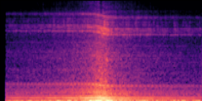 | 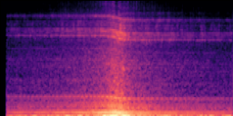 | 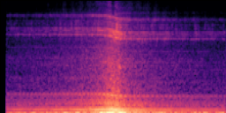 | 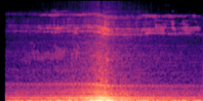 | 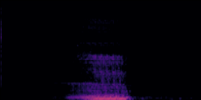 | 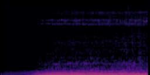 |
| scene | Mixture | Reference | Ours | AudioSep | FlowSep | SoloAudio | OmniSep | ZETA | Audio-Omni |
|---|---|---|---|---|---|---|---|---|---|
| Scene: engine (static), door (static); room absorption 0.30. Edit: door moved 4x farther. |  | 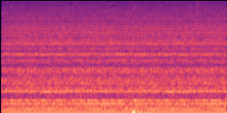 | 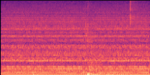 | 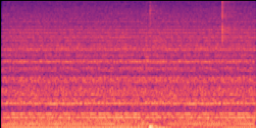 | 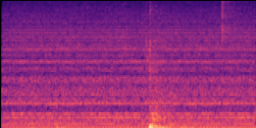 | 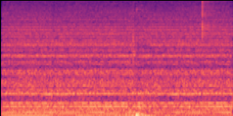 | 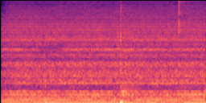 | n/a | n/a |
| scene | Mixture | Reference | Ours | AudioSep | FlowSep | SoloAudio | OmniSep | ZETA | Audio-Omni |
|---|---|---|---|---|---|---|---|---|---|
| Scene: tap (static), door (static); room absorption 0.50. Edit: room absorption 0.50 -> 0.30. | 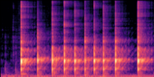 | 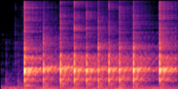 | 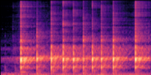 | n/a | n/a | n/a | n/a | n/a | n/a |
| Scene: hammer (static); room absorption 0.45. Edit: room absorption 0.45 -> 0.30. | 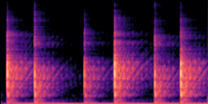 | 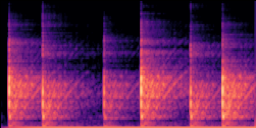 | 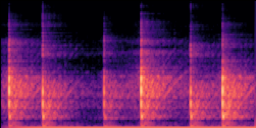 | n/a | n/a | n/a | n/a | n/a | n/a |
| scene | Mixture | Reference | Ours | AudioSep | FlowSep | SoloAudio | OmniSep | ZETA | Audio-Omni |
|---|---|---|---|---|---|---|---|---|---|
| Scene: engine (static), door (static); room absorption 0.30. Edit: remove the engine; door moved 4x. | 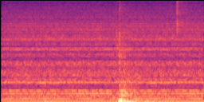 | 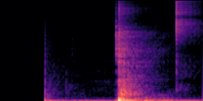 | 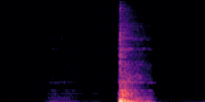 | 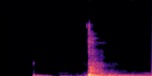 | 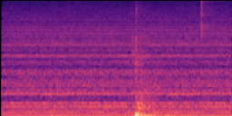 | 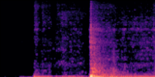 | 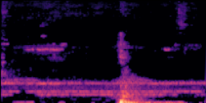 | n/a | n/a |
| scene | Mixture | Reference | Ours | AudioSep | FlowSep | SoloAudio | OmniSep | ZETA | Audio-Omni |
|---|---|---|---|---|---|---|---|---|---|
| Scene: engine (pass-by 8.1 m/s), thump (static); open air. Edit: engine at 30 m/s; thump moved 2x. | 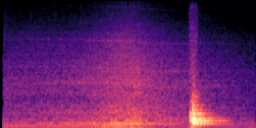 | 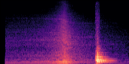 | 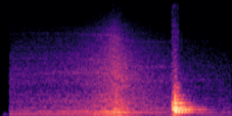 | 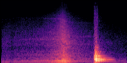 | 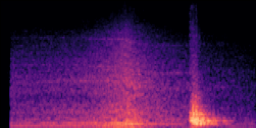 | 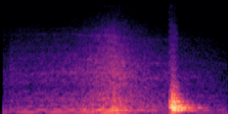 |
| scene | Mixture | Reference | Ours | AudioSep | FlowSep | SoloAudio | OmniSep | ZETA | Audio-Omni |
|---|---|---|---|---|---|---|---|---|---|
| Scene: gunshot (static), bass drum (static); room absorption 0.35. Edit: remove the gunshot; room absorption -> 0.40. | n/a | n/a | |||||||
| Scene: drum (static), bass drum (static); room absorption 0.50. Edit: remove the drum; room absorption -> 0.35. | n/a | n/a | |||||||
| Scene: bell (static), glass (static), drum (static); room absorption 0.50. Edit: remove the glass; room absorption -> 0.45. | n/a | n/a |
| scene | Mixture | Reference | Ours | AudioSep | FlowSep | SoloAudio | OmniSep | ZETA | Audio-Omni |
|---|---|---|---|---|---|---|---|---|---|
| Scene: bell (static), alarm (pass-by 22.7 m/s); open air. Edit: remove the bell; alarm at 30 m/s. | n/a | n/a |
| clip | Recording | Ours | ZETA | Audio-Omni |
|---|---|---|---|---|
| Mazda3: the recording was made at 43 km/h. The vehicle passes by at 30 km/h instead. | ||||
| RenaultCaptur: the recording was made at 30 km/h. The vehicle passes by at 39 km/h instead. | ||||
| RenaultCaptur: the recording was made at 72 km/h. The vehicle passes by at 50 km/h instead. | ||||
| Mazda3: the recording was made at 67 km/h. The vehicle passes by at 87 km/h instead. | ||||
| RenaultCaptur: the recording was made at 50 km/h. The vehicle passes by at 35 km/h instead. | ||||
| Mazda3: the recording was made at 94 km/h. The vehicle passes by at 122 km/h instead. |